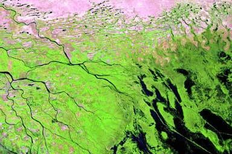
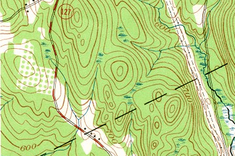
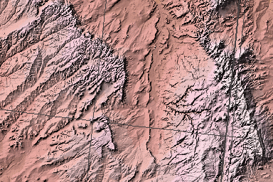
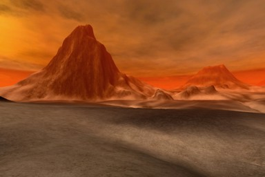

UDN
Search public documentation:
TerrainsFromDEMs
日本語訳
中国翻译
한국어
Interested in the Unreal Engine?
Visit the Unreal Technology site.
Looking for jobs and company info?
Check out the Epic games site.
Questions about support via UDN?
Contact the UDN Staff
中国翻译
한국어
Interested in the Unreal Engine?
Visit the Unreal Technology site.
Looking for jobs and company info?
Check out the Epic games site.
Questions about support via UDN?
Contact the UDN Staff
Terrains from DEMs: Using Digital Elevation Models
Document Summary: Information on using DEM files to create terrains. Original author David Green?.Digital Elevation Model Overview
A Digital Elevation Model ("DEM") is a data file that contains a rasterized grid of elevation sample points usually acquired from a remote sensing system such as an orbiting radar satellite. This data can be converted into either a grayscale heightmap or a 3-dimensional mesh representation of the location that was surveyed. The resolution and quality of currently available DEM data varies considerably, with the majority of data being of such low resolution that it is only useful for GIS or high-altitude imaging and shaded relief rendering. DEM data should not be confused with actual raster photo images, such as seen on GoogleEarth at http://earth.google.com/ or the Mars HiRISE project at http://hirise.lpl.arizona.edu/. Raster photos contain standard visual images taken with a photographic camera, whereas DEM data is normally accumulated using a radar or laser or similar altitude measurement system. Photographic data cannot be easily converted to heightmap altitude data, as the image pixel data does not directly represent the altitude of each location. Derived altitude data would be difficult to extract from photos as many factors would have be accounted for such as the angle of incidence of the main light source rays and the effect on light and shadow caused by this. Topographical data is also available in Contour Line Map formats which include monochromatic and elevation color styles, and Color Relief format which is similar to Contour but uses only colors to represent altitudes. Many Contour Line and Color Relief Maps are sourced from land surveying so they do not contain the resolution or accuracy of remote sensing data files. Aerial Photography Image:  Volga River Delta - U.S. Geological Survey Contour Map:  State of New Hampshire, U.S.A. - U.S. Geological Survey Shaded Relief Image:  New Mexico, U.S.A. - National Atlas Map Maker Unreal terrain created from DEM data  David GreenDEM Data Resolution
Most DEM data files are stored as a rectangular raster image of x*y sample points of 16-bit binary or ASCII altitude values. There are a number of software utilities available that will convert various DEM formats directly to the UnrealEd G16 heightmap format, such as G16Ed or the HMCS and HMES software applications. Other GIS and government or university conversion utilities may provide an intermediary conversion file format such as to RAW16 or TIF-16, which can then be more easily converted to UnrealEd's G16 format. The most common DEM files are currently of the Earth and Mars, with varying resolutions at different locations on each of these planets. DEM file resolution is measured in arcminutes and arcseconds or their respective spatial distance in meters. The most common DEM resolutions are 10, 30 and 90 meter, with the highest resolution data currently available at 1 and 5 meters, although this high-resolution data is rare and not usually available to the public. The arcsecond or meter resolution is the space between each sample point in the data file. At sea level on Earth, one arcminute or one minute of angle is approximately 1.151 miles (6076.115 feet) or 1.852 kms (1852 meters), which is also 1 nautical mile. One-third arcsecond (1/3") is commonly referred to as 10 meter (10.3 meters or 33.79 feet). One arcsecond (1" or 1/60th arcminute) is commonly referred to as 30 meter (30.86 meters or 101.2 feet). Three arcseconds (3") is commonly referred to as 90 meter (92.6 meters or 303.6 feet). Thirty arcseconds (30") is approximately 1km (926 meters or 3038.06 feet).Contour and Relief Map Resolution
The issue with using Contour maps to obtain heightmap information is the fact that the images are essentially a group of lines that show the general definition of an area of reasonable change in altitude. It is difficult to scan and convert this data into actual x*y altitude points for a specific grid area of the map. Specially designed software is required that performs edge-detection and tracing of each contour line, and then extrapolates the altitude reference and curve from that. The actual resolution for terrain detail on Contour maps is very low. The issue with using Relief and Shaded Relief maps to obtain heightmap information is the fact that Relief maps are usually sourced from a contour line (topographical) map, with the elevation dimension exaggerated by a factor of ten to facilitate the recognition of geological features. Shaded Relief maps also contain light and shadow rendering to provide a better 3-dimensional view, which cannot be easily removed from the underlying altitude data. Contour and Relief maps are measured in a scale of 1:x. A few common scale values and their equivalent sizing are: 1:24,000 scale maps are 7.5-minute. A 7.5-minute quadrangle contains an area of about 64 square miles. 1:62,500 scale maps are 15-minute. 1:63,360 is one inch representing one mile. 1:100,000 scale maps have lines of latitude spaced 30 minutes apart and lines of longitude spaced 60 minutes. The 30 x 60-minute quadrangle one centimeter on the map represents one kilometer of distance on the ground.Increasing DEM Resolution
Although it is possible to add detail to a low resolution DEM file, such as adding noise to a 30 meter or 10 meter data file, you simply cannot reproduce the exact original altitude data that is not present in the data file. Using a DEM data file as the source for a heightmap that is then modified with other noise or geomorphology (erosion, etc.) passes over the altitude data, results in a DEM that no longer represents the source, as the original altitude points will be changed.DEM Data in Unreal Units
The quick answer as to which DEM Data Resolution is suited for use as video game terrain is 5 meters and smaller. DEM data that is 10 meters and larger is simply too low in resolution to be useful for terrain design. The Unreal Engines 2, 2.5 and 3 use a default scale of 1 Unreal Unit = 2 cm. Therefore 1 meter = 50 Unreal Units. Using this default engine scale, the common DEM resolution data is equivalent to the following Unreal Unit spacings:- 1 meter DEM data = 1x50 = 50 UUs between sample points
- 5 meter DEM data = 5x50 = 250 UUs between sample points
- 10 meter DEM data = 10x50 = 500 UUs between sample points
- 30 meter DEM data = 30x50 = 1500 UUs between sample points
- 90 meter DEM data = 90x50 = 4500 UUs between sample points
DEM File Formats
The following file extensions are for the more common digital elevation model formats.| Extension | Format |
|---|---|
| .ddf | USGS DEM |
| .dem | Vista Pro Binary DEM |
| .dem | USGS DEM |
| .hgt | SRTM (Shuttle Radar Topography Mission) |
| .tif | GeoTIFF |
| .txt | Vista Pro ASCII DEM |
DEM Conversion Software
There are a number of software applications and utilities for translating DEM files to various other formats that can eventually be converted to a format usable by heightmap software and UnrealEd. No specific application is being recommended here since there is such a wide variety of DEM data types and tools with varying features and capabilities. The choice of software will vary depending on the studio requirements. A few common applications that support conversion of one or more DEM formats includes HMCS, HMES and Leveller, plus there are numerous non-commercial, government and academic tools for reading and converting various DEM formats, including 3DEM, Kashmir3D, LandSerf, MicroDEM, Wilbur, and EarthSlot, LandView, World Wind, and many others.DEM Data Sources
Links to most of the current sources for Aerial Photos, Satellite Imagery, and Remote Sensing data can be found on the U.S. Geological Survey web site. Note that most of this data has a fee to acquire a copy. The following are only a few of the many DEM data sources available. 5 meter UTAH AGRCLimited US data area.
http://agrc.utah.gov/agrc_sgid/dem_5m.html 10 meter NED
10 meter and 30 meter data sets. 10 meter is limited US areas only.
http://ned.usgs.gov/ 30 meter USGS
http://www.usgs.gov/pubprod/ 90 meter SRTM: Shuttle Radar Topography Mission
http://srtm.usgs.gov/
90 meter data averaged from the original 30 meter data.
Original 30 meter data sets obtained using interferometry.
30m x 30m spatial sampling with <= 16m absolute vertical height accuracy, <= 10m relative vertical height accuracy, and <= 20m absolute horizontal circular accuracy. Canada Topographical Data
http://maps.nrcan.gc.ca/index_e.php 1 kilometer SRTM30: Shuttle Radar Topography Mission, 30 arcsecond (1km) sets
http://topex.ucsd.edu/WWW_html/srtm30_plus.html
926 meter data. GTOPO30: Topographical 30 arcsecond sets
http://edc.usgs.gov/products/elevation/gtopo30/gtopo30.html
926 meter data.